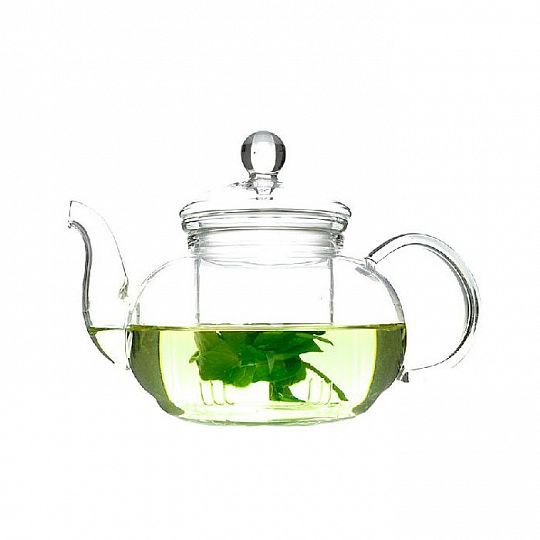
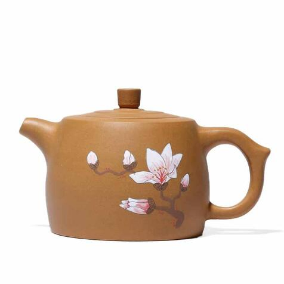
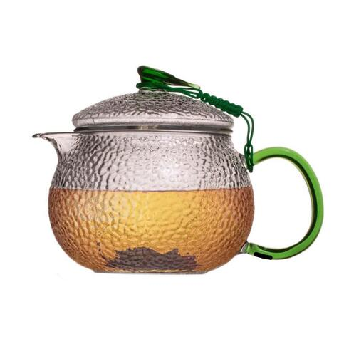
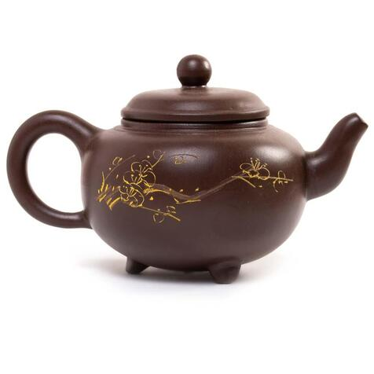

Друзі,
Зараз, через певні проблеми наш сайт не може повноцінно опрацьовувати запити стосовно придбання нашої продукцї. Ми вимушені перейти на замовлення через дзвінки: на сайті розміщені актуальні ціни на товар, якщо ви хочете його замовити - просто зателефонуйте нам за номером зазначеним ось тут. Вибачте за тимчасові незручності.
TeaSpot
TeaSpot > Продукція > ЧайникиЧайники
-

Чайник Гонконг 500 мл
500 грн
-

Ісинський чайник Ланьчу Циньлан 340 мл
1550 грн
-

Чайник HG "Зелений Лист" 550 мл
1199 грн
-

Чайник Гонконг 150 мл
1799 грн
-
Керамічний чайник
Традиційний керамічний чайник сьогодні продовжує радувати око та смакові рецептори справжніх поціновувачів чаю. Його батьківщина, як і батьківщина чаю, – Китай, і протягом багатьох століть заварювальні чайники з глини поступово зазнавали естетичних та функціональних змін, щоб зілля в них максимально розкривало свій таємничий характер.
Із плином часу майстри знайшли глину особливого сорту і з'явилися легендарні глиняні чайники з ісинської глини. Її добували біля містечка Ісинь у провінції Цзянсу та впізнавали за характерним буро-червоним відтінком. Так з'явивсь ісинський глиняний чайник, особливість якого полягає в тому, що він не лише утримує рідину всередині, а й дозволяє проникати всередину повітрю, збагачуючи смак та аромат напою.
З роками такий китайський чайник із глини не лише не втрачав властивостей, а й ставав більш цінним: ісинський чайник пах уже не лише глиною, а також ароматами та ферментами чаїв, які в ньому заварювалися, тому кожний новий продукт набував індивідуальних та багатих ноток. Завдяки цьому і сьогодні гурмани по всьому світу мріють купити чайник для заварювання з ісинської глини.
Сьогодні можна купити як нові ісинські чайники, так і ретро. Для кожного поціновувача купити ісинський чайник – одне з обов'язкових завдань чайного чек-листка!
-
Скляний чайник
Скляний чайник - це сучасний аналог стародавніх глиняних або керамічних заварників. Їх виготовляють із термостійкого скла, яке не тріскається під впливом температур, та може слугувати вам десятиліттями. А за умов стрімкого розвитку світу - це ще чудовий естетичний вибір: скляний чайник ідеально підходить під дизайн різноманітних кухонь, офісів, ресторанів.
Скляний чайник, як і традиційний, підходить для всіх видів чаю та трав'яних настоїв. Також даний тип чайнику дає вам змогу спостерігати за процесом заварки, споглядати рух чайного листя, теплим відваром, який заповнює весь його об'єм. Саме тому він користується попитом, бо вміщує в собі властивості традиційних чайників та сучасні потреби мінімалістичного дизайну.